library(tidyverse)
library(openintro)
library(infer)
library(knitr)
library(ggpubr)
library(kableExtra)
library(gghighlight)
library(patchwork)
options(pillar.print_min = 9) # to avoid annoying scroll behavior
knitr::opts_chunk$set(out.height = "100%")
theme_set(theme_bw())Inference with mathematical models
STA35B: Statistical Data Science 2
Akira Horiguchi
Based on Ch 13 of IMS
Inference
We addressed questions about population parameters by estimating them using sample statistics. For example,
- In the sex discrimination study, we asked if \(p_M - p_F > 0\) by estimating this proportion difference using \(\hat{p}_M - \hat{p}_F\).
- In the college student savings study, we asked if \(p_T - p_C > 0\) by estimating this proportion difference using \(\hat{p}_T - \hat{p}_C\).
- In the medical consultant study, we asked if \(p < 0.1\) by estimating this proportion using \(\hat{p}\).
We tried to reject \(H_0\) by seeing if the sample statistic was “unusual” under \(H_0\).
- That is, we tried to see if sample-to-sample variability could have explained how far the test statistic was from the null value if \(H_0\) was true.
Inference with mathematical models
We estimated the variability of a statistic using computational techniques:
- Randomization tests: the data were permuted assuming the null hypothesis.
- Bootstrapping: the data were resampled in order to measure the variability.
We’ll now measure a statistic’s variability by using mathematical formulas derived from statistical models we impose on the data.
- Next we will discuss what these statistical models are and why they seem justified to use.
Sampling distributions
A sampling distribution is the distribution of all possible values of a sample statistic from samples of a given sample size from a given population.
- Describes how much sample statistics vary from one sample to another.
- E.g. mean GPA of 7 randomly sampled UC Davis data-science graduates.
Because a sampling distribution describes sample statistics computed from many studies, it cannot be visualized directly from a single dataset.

- Can only be visualized using computational methods / mathematical models.
In previous examples, we ran 10,000 simulations under the null hypothesis \(H_0\).
- Each simulation provided a version of the sample statistic under \(H_0\).
- These 10,000 versions allowed us to estimate the sampling distribution of the sample statistic under \(H_0\), i.e., the null distribution.
- We visualize our estimated null distributions below:
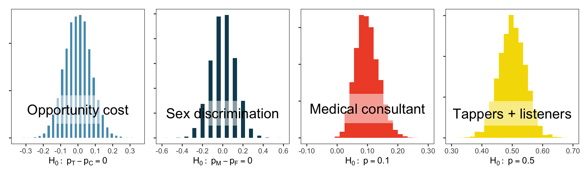
- These distribution shapes look oddly similar to each other…
The central limit theorem and normal distributions
Central limit theorem: With enough independent samples from a population, the sample proportion/mean will increasingly resemble a normal distribution, which is a bell-shaped curve that looks like
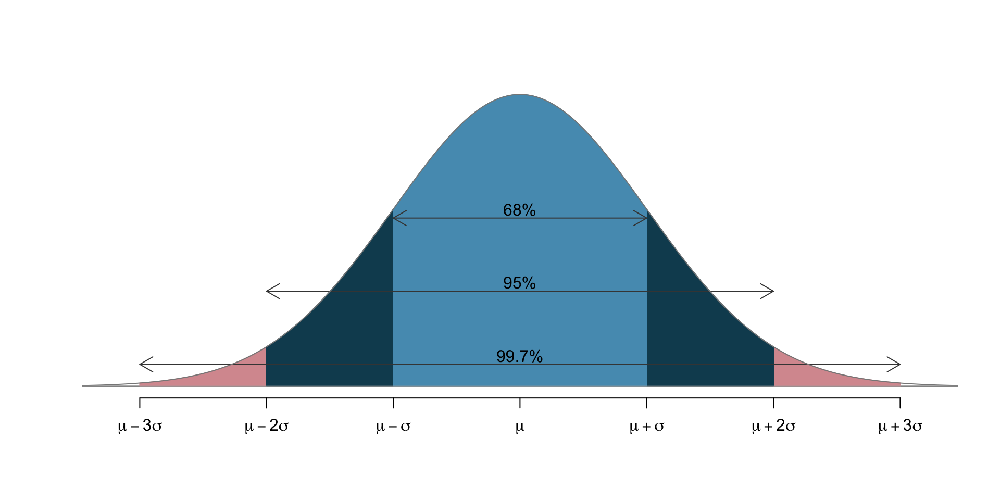
- \(\mu\) (Greek letter “mu”) is the distribution mean (a location parameter)
- \(\sigma\) (Greek letter “sigma”) is the distribution “standard deviation” (a scale parameter)
Values of \(\mu\), \(\sigma\) may change from plot to plot, but retains the bell shape. E.g.:
- The sample proportion \(\hat p\) will look like a normal distribution centered at population proportion \(p\) provided that:
- The observations in the sample are independent: samples are truly randomly sampled from a population.
- Sample size is large enough: each class (treatment/control) generally needs \(\geq 10\) observations.
- Same ideas hold for sample mean \(\bar x\): centered at population mean \(\mu\).
Normal distribution model
- Symmetric, unimodal, bell-shaped. Area under curve always integrates to 1.
- Exact values of center / spread can change.
- Mean \(\mu\) shifts from left to right.
- Standard deviation \(\sigma\) squishes or stretches the bell shape.
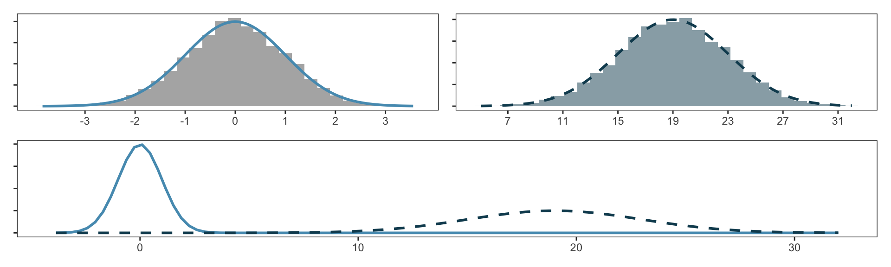
We denote “normal distribution with mean \(k\) and standard deviation \(r\)” as \(N(\mu = k, \sigma = r)\).
- Left curve has \(N(\mu=0, \sigma=1)\); right curve has \(N(\mu=19, \sigma=4)\).
- We call \(N(\mu=0, \sigma=1)\) the standard normal distribution.
z-score quantifies how “unusual”/“extreme” a quantity \(x\) is
How many standard deviations \(\sigma\) away from the mean \(\mu\) the quantity \(x\) is: \[Z := \frac{ x - \mu}{\sigma}.\]
z-score examples
If Ant scored 1800 on SAT and Bug scored 24 on ACT, who performed better?
- SAT scores approximately follow normal distribution with mean 1500 and standard deviation 300. \(\Longrightarrow\) z-score for Ant: \(\boxed{(1800 - 1500) / 300 = 1}\)
- ACT scores approximately follow normal distribution with mean 21 and standard deviation 5. \(\Longrightarrow\) z-score for Bug: \(\boxed{(24 - 21) / 5 = 0.6}\)
- Ant has larger z-score, so Ant performed better.
What score corresponds to a z-score of 2.5 in each of the SAT and ACT?
- SAT: 1500 + 2.5 * 300 = 2250
- ACT: 21 + 2.5 * 5 = 33.5
Normal probability calculations: percentile and quantile
Ant scored 1800 on SAT. What is the percentile of this score?
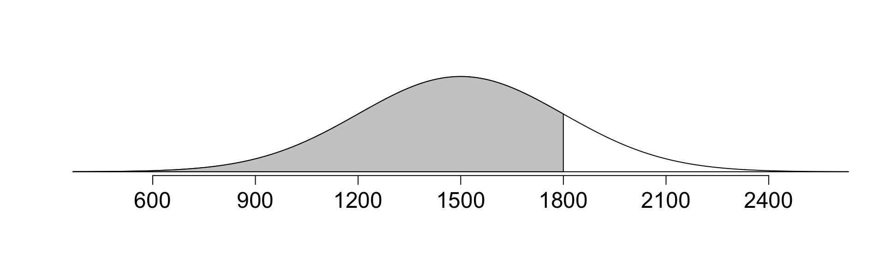
pnorm()provides percentile associated with a cutoff in the normal curve.
[1] 0.8413447Can also do the reverse: identify the SAT/z-score associated with a percentile.
qnorm(): identifies quantile for given percentage
[1] 1800[1] 0.9999998- quantile and percentile are inverse operations:
Normal probability calculations: area
What is the probability that a random SAT taker scores \(\geq 1630\)?
- Recall: normal, mean \(\mu=1500\), s.d. \(\sigma=300\).
- Draw the normal curve and visualize the problem:
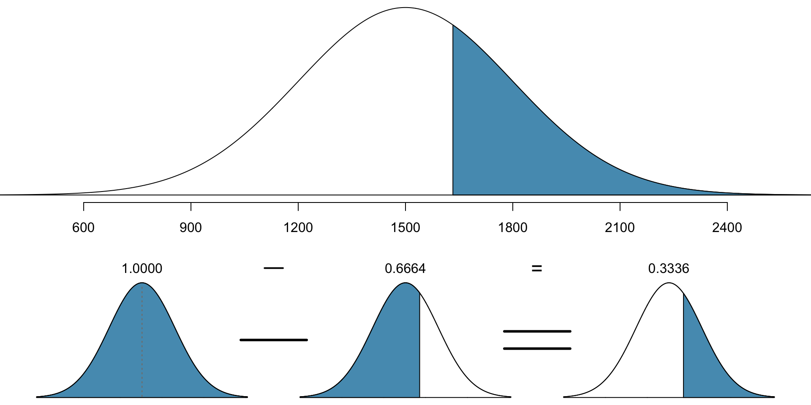
- Calculate z-score of 1630: \[ Z = \frac{x - \mu}{\sigma} = \frac{1630 - 1500}{300} = \frac{130}{300} = 0.433.\]
- Then we want to calculate the percentile:
- Thus the proportion of 0.668 have people with z-score lower than 0.433.
- To compute area above, need to take one minus this (total area = 1)
- Total proportion: \(1-0.668 = 0.332\).
- Probability of scoring at least 1630 is 0.332, or 33.2%.
Ex: SAT
Suppose Dog scored 1400 on SAT. What percentile is this?
- Draw a picture:
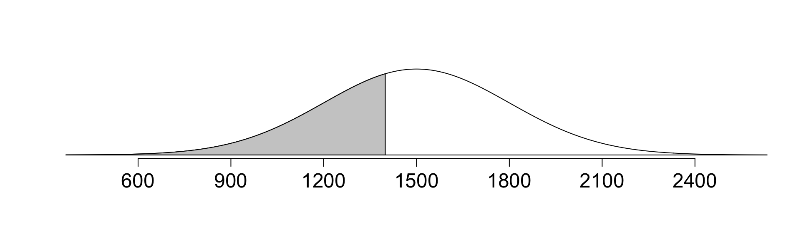
Approach 1: use data directly.
Approach 2: first calculate z-score, then use pnorm() on z-score.
- Calculate z-score: \[ Z = \frac{x - \mu}{\sigma} = \frac{1400 - 1500}{300} = \frac{-100}{300} = -0.333.\]
Either approach: Dog did better than ~37% of SAT takers.
Ex: Height
Suppose the height of men is approx. normal with avg 70” and sd 3.3”
- If Ewe is 5’7” (67”), Fox is 6’4” (76”), what percentile of men are their heights? Draw a picture and use
pnorm()to calculate the percentage.
Ex: Height Percentiles
- Let’s now try and calculate what the 40th percentile for height is
- Mean: 70”, s.d.: 3.3”
- Always draw a picture first:
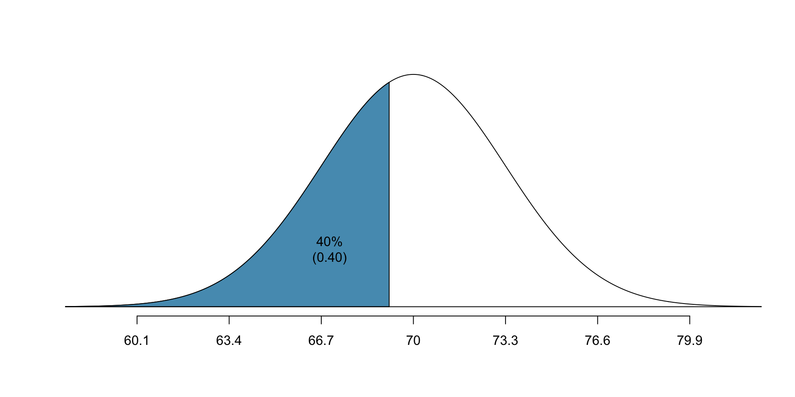
- z-score associated with 40th percentile:
- With z-score, mean, and s.d., we can calculate the height: \[-0.253 = Z = \frac{x-\mu}{\sigma} = \frac{x - 70}{3.3} \] \[ \implies x - 70 = 3.3 \times -0.253 \] \[ \implies x = 70 - 3.3\times 0.253 = 69.18 \]
- 69.18” is approximately 5’9”
Quantifying the variability of statistics
Most statistics we have seen (sample proportion, sample mean, difference in two sample proportions/means) are approximately normal when the data is independent and there are enough samples.
- It is thus very useful to have an intuition for how much variability there is within a few standard deviations of the mean in a normal distribution.
- 68 - 95 - 99.7 rule: pictorally,
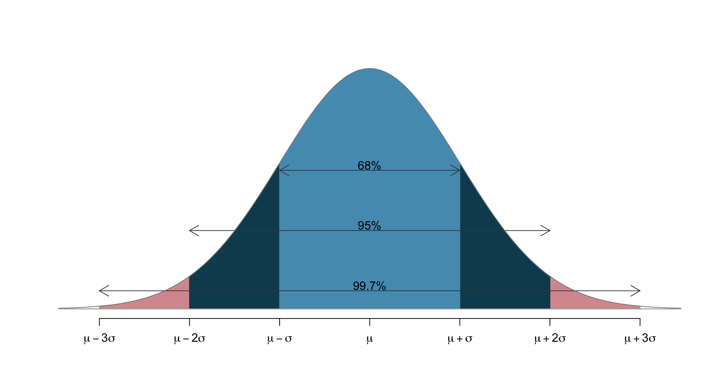
- 68% of the data lies within 1 s.d. of the mean
- 95% lies within 2 s.d.’s
- 99.7% lies within 3 s.d.’s
- Only 0.3% lies more than 3 s.d.’s away from the mean.
- We can confirm this with
pnorm()in R:
Use 68 - 95 - 99.7 rule for quick mental math
What is the percentile corresponding to…
- …a z-score of \(-2.33\)?
- …a z-score of \(1.17\)?
- …a z-score of \(2.91\)?
Hint: how many standard deviations away from the mean is a z-score?
Standard error
- Point estimates (e.g., sample proportions/means) vary from sample to sample.
- We quantify this variability by the standard error: the standard deviation associated with the statistic.
- Actual variability of the statistic in the population is unknown – we use data to estimate the standard error (just as we use data to estimate the unknown population proportion/mean)
- We typically estimate standard error using the “central limit theorem”
- will see how to calculate this in future lectures
- Standard Deviation vs Standard Error, Clearly Explained!!! (2:51)
Margin of error
You may also see the term “margin of error”: describes how far away observations are from the mean (distance from the mean). For example:
- 68% of the observations are within one margin of error of the mean.
- 95% of the observations are within two margins of error of the mean.
- 99.7% of the observations are within three margins of error of the mean.
Opportunity-cost case study
Students are reminded about saving $15 if they don’t buy video game right now.
- We estimated that difference in proportions was 0.20.
- We then used a randomization test to look at the variability in difference of proportions under null hypothesis: difference in proportions does NOT depend on being presented with reminder
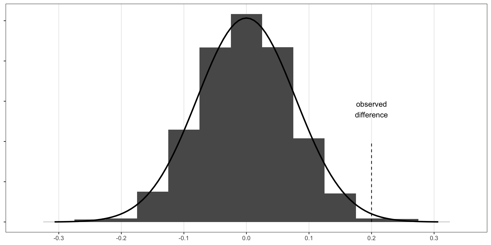
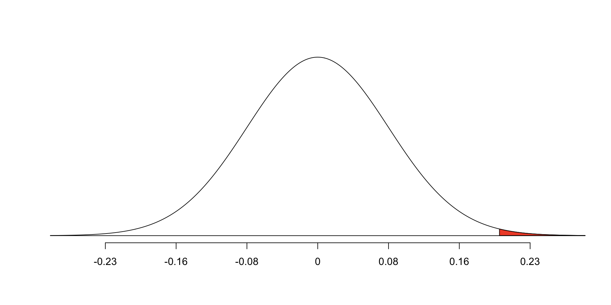
z-score in a hypothesis test is given by substituting the standard error for the standard deviation: \[Z = \frac{\text{observed difference} - \text{null value}}{SE}\]
- Here: assume we know the SE is 0.078 (methods to calculate: to come)
\[Z = \frac{0.20 - 0}{0.078} \approx 2.56\]
Drawbacks of the central limit theorem / normal approximation
- Under certain conditions, we can be guaranteed that the sample mean and sample proportions will be approx. normal, with appropriate mean \(\mu\) and s.d. \(\sigma\)
- We require:
- Independent samples (no correlation between them!)
- Large number of samples (>= 10 per treatment for proportions)
- We sometimes cannot be certain samples are independent
- The normal approximation assigns a positive chance for EVERY value to occur - this is not ideal if you are talking about things like time or other variables with constraints (e.g., time is always >= 0).
- Developing statistics which incorporate constraints into the variables is more challenging, and requires mathematical work.
Summary
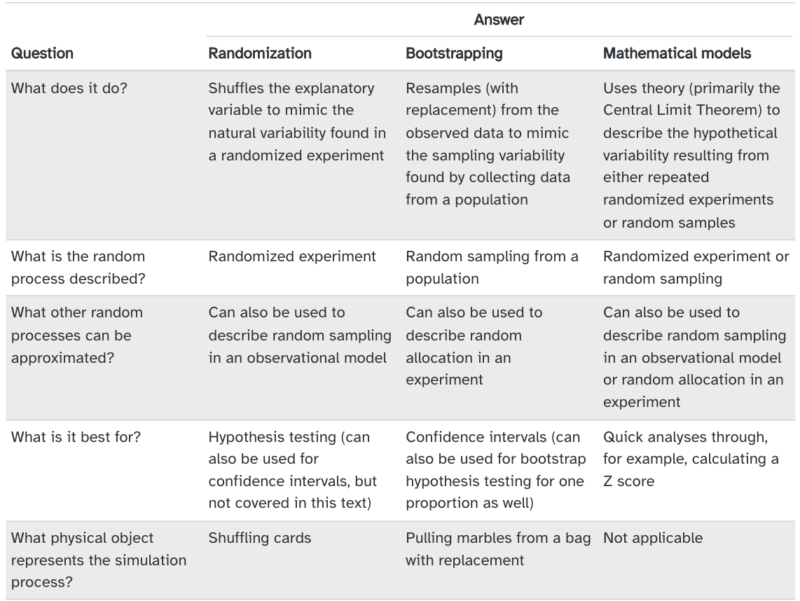